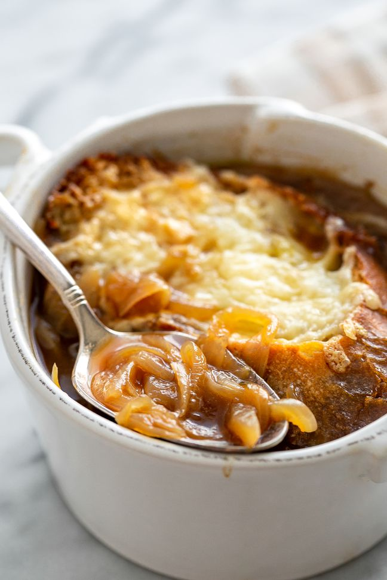

French Onion Soup

Description
Warm, cozy, and flavorful, this French onion soup is prepared with beef stock and caramelized onions. Top with croutons covered in melty Gruyere and Parmesan cheese.
Is there anything more comforting on a chilly day than a hot bowl of French onion soup? Especially with a thick slice of toasted bread loaded with melty Gruyere cheese and lots of caramelized onion.
Ingredients
- Yellow onions
- Olive oil
- Butter
- Salt
- Garlic
- Beef stock
- Dry vermouth
- Bay leaves
- Thyme
- Ground black pepper
- Cognac
- Baguette
- Gruyere cheese
Steps
- Peel and slice the onions.
- In a 5 to 6 quart thick-bottomed pot, heat 3 tablespoons of olive oil on medium heat. Add the onions and toss to coat with the olive oil. Cook the onions, stirring often, until they have softened, about 15 to 20 minutes. Increase the heat to medium high. Add the remaining tablespoon of olive oil and the butter and cook, stirring often, until the onions start to brown, about 20 to 40 minutes. The amount of time will vary depending on your pot, stove, and onions.
- Sprinkle with sugar (to help with the caramelization) and 1 teaspoon of salt. Continue to cook until the onions are well browned, about 10 to 15 more minutes. Add the minced garlic and cook for a minute more.
- Deglaze the pot with the vermouth.
- Add the stock, bay leaves, and thyme. Bring to a simmer, cover the pot and lower the heat to maintain a low simmer. Cook for about 30 minutes.
- Season with salt and pepper and add the brandy. Discard the bay leaves.
- While the soup is simmering, line a sheet pan with parchment paper or foil and preheat the oven to 450°F with a rack in the upper third of the oven. Brush both sides of the French bread or baguette slices lightly with olive oil (you'll end up using about a tablespoon and a half of olive oil for this). Put in the oven and toast until lightly browned, about 5 to 7 minutes. Remove from oven.
- Turn the toasts over and sprinkle with the grated Gruyere cheese and Parmesan. Return to oven when it's close to serving time and bake until the cheese is bubbly and lightly browned.
- To serve, ladle soup into a bowl and transfer one cheesy toast onto the top of each bowl of soup.